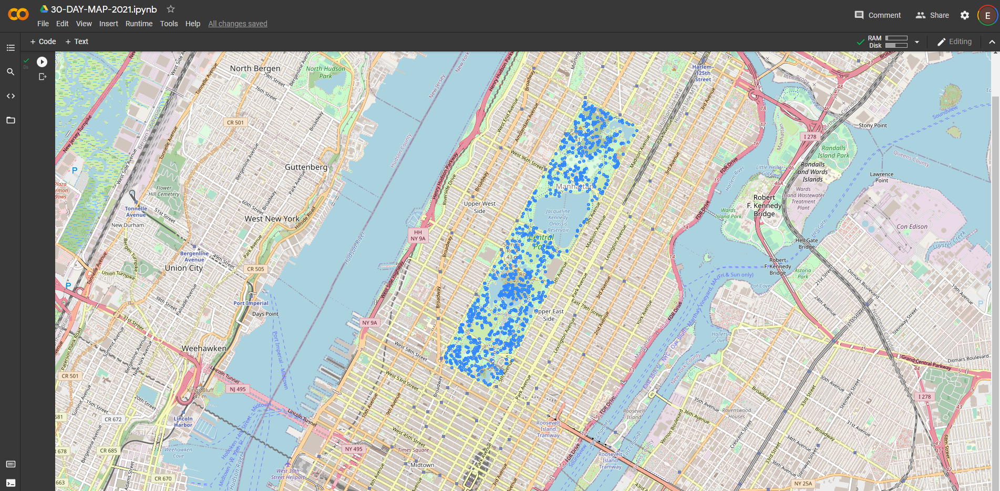
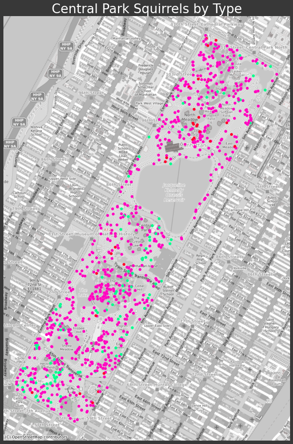

#30DayMapChallenge
November 2021 Map Challenge
October 26
The smell of autumn is in the air in Michigan, and that can only mean the annual 30 Day Map Challenge is near!
What is the 30 Day Map Challenge?
Each day presents a map challenge focused on a different spatial feature or topic.
Cartographers are invited to create a map each day with the tools of their choice centered around that day’s theme.
Daily themes involve working with a specific type of vector data, colors, or feature type. The categories for this year are
shown below, so get going with some crazy cartography!

About Me: I'm a Geospatial Developer and Scientist, I specialize in Hydrology and Natural Resource analysis, and am looking to deploy Data Science, Remote Sensing, and Deep Learning to solve complex ecological and social problems. Also I enjoy forest hikes, the Great Lakes, permaculture and playing gypsy jazz guitar.
Proposed Approach for 2021
#30DayMapChallenge - October 27
30 Maps in 30 days requires some type of a plan to execute in such a short window....
What sort of a theme would be novel? What would be interesting? What could provide a path to deliver a map each day?
Why note a new city each day? Using the largest cities in the US by population, and discovering open data portal for each city.
This could also involve Jupyter Notebooks, and Python, and Scraping, sounds like an exciting data science excursion!
I began by scraping wikipedia for the list of largest cities with the Beautiful Soup Library, parsed into a dataframe,
cleaned the text columns, and reduced the list from 326 to the top 30.
Next I automated the search query for each city and the text: "Open Data," saving the top three results into a new dataframe.
Export to CSV and we've got something to start with!
Watch this scraping/searching automation occur in front of your eyes below, along with some cool jazz.
Gist also shown below video.
Objectives for 30 Day Map Challenge
#30DayMapChallenge - October 28
Well it's not even November and we are already getting into the carto challenge.
Beyond the sheer exuberence and joy that comes from creating rapid fire maps, what else could we take away from the Challenge?
How can all of this work benefit our personal Geospatial Development?
Personal Objectives
- Organize a well planned approach
- Have a general sketch for the daily map
- Plan out data sources and acquisition
- Enhance my web development skills with this page!
- Well organized Colab Geo Processing Notebook
- Discover and document new data sources/portals
- Increase competency across the board with QGIS
- Interesting and beautiful layer symbolizations
- Aesthetically pleasing map outputs
- 2.5D map styling
- Geo processing and data preparation
- PyQGIS scripting and automated map production
- What skills are you hoping to learn???
You can see the embedded Notebook evolve in the section above.
Please check back daily for new maps and exciting Geo updates!
It's a Great Day to Explore Data!
#30DayMapChallenge - October 29
As mentioned earlier on, we will be exploring the 30 largest US cities for the 30 Day Map Challenge. I've started a Google
Colab Jupyter type notebook, which lives entirely in the cloud, and starting scraping the list of cites. Additionally, Using
a python search library, was able to find the top 3 results for each city + 'open data,' and generate a CSV file from this dataframe.
The first city on the list is unsurprisingly, New York, with 'Points' for the category. Another clever little trick I've found is to
open these links within a notebook cell with -> IFrame(src=dfSlice['URL'][0], width='100%', height='800px')
You can see below that we are starting with NYC OpenData, let the free data flow and see where it takes us!
Stay Calm and Map On

Day 1 - Category: Points - City: New York
#30DayMapChallenge - November 1
SO IT BEGINS
I have a map, it has points, the points are squirrels, it’s not pretty
I’m working in Colab, it’s a start! #30DayMapChallenge #geoPandas #squirrels
Stay Calm and Map On
 Powered by w3.css